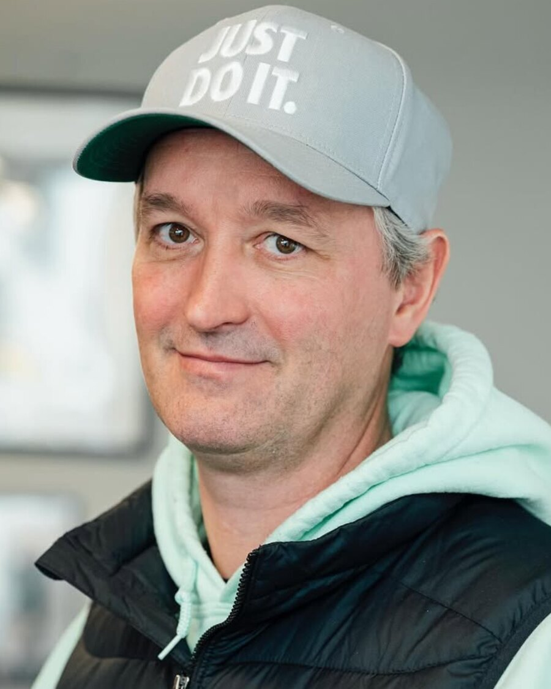
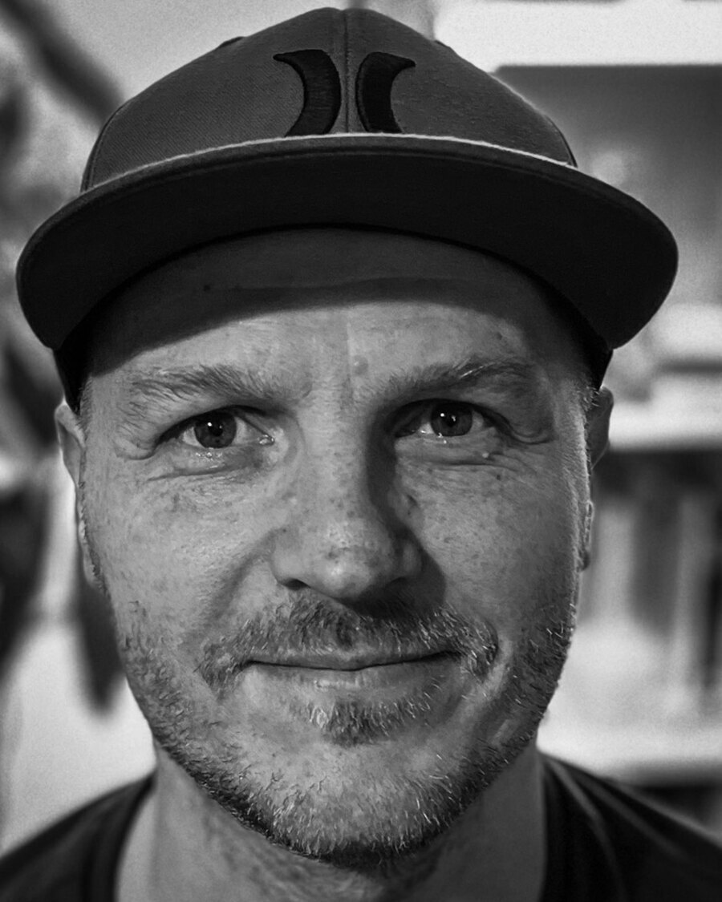
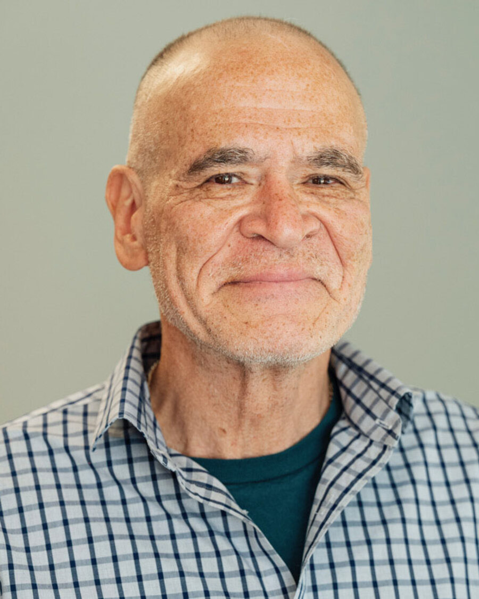

Our people
The qualification here is the years.
A board and a team assembled around one requirement that no other organisation in this sector can advertise for. Names and photographs go up as each person agrees to be named, and not one day before.
Nobody is listed here who has not agreed to be. Being on a public page has real consequences for this population.
The board.
Three officers, serving on an interim basis while the organisation stands itself up under its new name. These are the people accountable for Next Reentry today. Further board members join as each one agrees to serve.

Robin Davidson
Runs the organisation day to day and carries the relationships it is built on, including the partnership with Art Inside Out.

Lukas Green
Keeps the record: minutes, notices, the governing documents and who decided what.
Michael Persinger
Watches the money, reports it to the board, and makes sure the numbers we publish are numbers we measured.
This is the board as it stands today, not a plan for one.
Every name above is a person actually serving, in the role printed above their
name. The board is deliberately small while the organisation establishes itself,
and it grows as further members agree to serve. Nobody appears on this page
before they have agreed to be listed, which is why you are reading three names
rather than a longer list with the gaps filled in.
The people doing the work.
The team that writes the lessons, keeps them current and sits down with people one to one.

Kirk Charlton
Created Art Inside Out inside Eastern Oregon Correctional Institution, and still teaches it. Artist, author and educator.
Robin Davidson
Founded the work this grew out of and filed the paperwork behind Next Reentry.
Lukas Green
Builds what the organisation runs on and keeps the material current, on the same lived experience the lessons come from.
Name to come
Sits down with people coming home and builds the starter kit around what is actually in front of them.
Name to come
Tracks what changed: scams, platforms, financial products, hiring practice. Keeps the material from going stale.
Name to come
Receives what people send, handles consent, and turns lived experience into the next version of the curriculum.
Being visible is not a small ask in this population.
Putting a name and a face on a reentry organisation carries real consequences for the person, for their employment, and sometimes for their family. It is also exactly what makes the claim credible, which is the tension.
So we do it one person at a time, with written consent for that specific use, and anyone can withdraw it later and be taken down. Nobody gets added to this page because it would look better for a funder.
Written consent, per use
Agreeing to be named on this page is not agreeing to appear in a grant application, a press release or a photograph. Those are separate questions and we ask them separately.
Withdrawable, no reason needed
Circumstances change. Anyone listed can be removed on request, and we do not ask why.
No stock photography anywhere
Not on this page and not on this site. Buying a picture of a stranger to stand in for the people we serve would be the exact thing we are against.
If you came home and made it work, you know something worth handing over.
We are building the board and the team from people who have lived this, and from professionals willing to put their expertise behind a group that has. If that is you, say so.